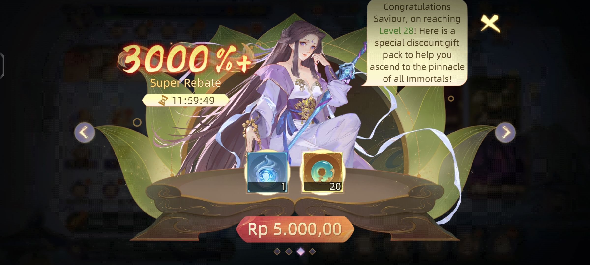

Reminder:Tips tetap membutuhkan duit sekitar Rp.5000,00 per 1 akun untuk membeli bundle hero R (Bundle akan otomatis muncul saat menyentuh lvl 28 dan berbatas waktu 12 jam semenjak lvl 28 tolong di perhatikan)
Technique : OG BOOSTER
Membuat 1-2 Akun untuk mencari akun yg mendapat lebih banyak wukong, Jika kedua akun berunting dan sama² mendapat wukong yg banyak maka bisa di gunakan.
Trick : Harus memiliki akun lebih awal di server tua contoh nya akun yg memakai teknik OG BOOSTER berada di id 7 maka akun yg mengsupport berada di ID 6 - ID 1. Akun untuk mengsupport harus memiliki artifact biru dan hijau yg cukup banyak, Yg akan di kirimkan kepada akun di ID 7 yg membuat kita berhasil mendominasi server dengan lonjakan power di akibatkan banyak nya lvl artifact dan grade artifact lebih baik. OG BOOSTER sudah tidak bisa di gunakan semenjak TCS (TradeCrossServer) di nonaktifkan.
Technique : Trilogi
Lumayan mirip dengan teknik OG BOOSTER, Namun lebih sulit karna melakukan trade hanya dengan sesama server untuk itu kita harus membuat banyak akun sejak awal game.
Saran by @lady_evelleazt : Bagi yang memiliki laptop boleh untuk menjalankan clone saat membuat banyak akun agar lebih cepat.
Step 1 : buat akun sebanyak dan se awal mungkin pada saat pembukaan server. Pada pagi hari tetap pantau untuk melihat perilisan server terbaru, Dan juga akun nya tidak perlu di mainkan full hanya untuk mencari akun yg mendapat banyak wukong di awal permainan. Akun di mainkan hanya sebatas menghabiskan seluruh stamina setelah itu buat akun baru yang lain. (Akun yang tidak beruntung di jadikan akun farming)
Step 2 : secepat mungkin tingkatkan setidak nya 1 (Akun utama) 2 (Akun farm) ke lvl 30 untuk membuka fitur fangchun dan mendapat lebih banyak artifact dan juga artifact exp.
Step 3 : Tingkatkan ke lvl 33 ke semua akun agar bisa mendapat reward dari kota reward dari kota yg kita butuhkan untuk di kirim ke akun utama adalah box mo dan coin mo. (Box mo yg di dapat akun farm tidak di gunakan melainkan di kirim ke akun utama untuk meningkatkan kemungkinan mendapat batu ascend)
Step 4 : Perhatikan komposisi hero akun utama pada saat awal game di sarankan menggunakan Wukong, Tangseng, Change, Zixia, Gadis naga.
Jika menggunakan teknik Trilogi dengan ilmu yg mumpuni maka memungkinkan kamu untuk mendominasi server sejak awal permainan. (Jika kebingungan baca seluruh Beginner Guides berisi semua fungsi UI untuk pemula)